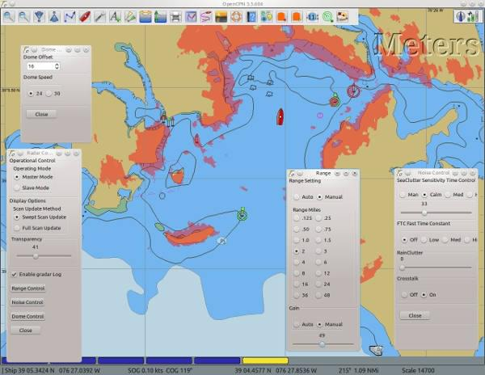

Garmin Radar
The GRadar plugin works with modern Garmin (Ethernet capable) radar scanners only.
The chart plotter is a combination of a Gps and electronic charts. If Gps works as expected and, a bigger if, the chart is correct, then everything is fine. Add a radar to the mix, with an independent picture of targets, including land, buoys and other vessels, and compare the two. That is what this plugin does. It overlays the radar-picture on the chart plotter. If both agree, the navigator can be more confident that his navigation is correct. On the other hand, if the pictures disagree, there is one more thing to sort out.
To use this plugin the user must be familiar with both OpenCPN and radars. Without a sound knowledge in radar picture interpretation, the plugin will seem a bit confusing.

Hardware
The Garmin Radar PlugIn for OpenCPN requires a specific hardware interface in order to allow the OpenCPN application to access the Ethernet data captured and broadcast by the radar scanner.
There are three interconnect scenarios possible, depending upon whether the installation includes an existing Garmin chartplotter, and the operational mode desired.
Interface Type 0: OpenCPN Slave Mode, using existing Garmin chartplotter.
Interface Type 1: OpenCPN Master Mode, using existing Garmin chartplotter.
Interface Type 2: OpenCPN Master Mode, no chartplotter.
Download and read the complete installation instructions: GRadarDoc.pdf
Installing the plugin
Enable GRadar plugin
Once installed enable the plugin in Options→Plugins. The Preference button does not work. For GRadar Settings, read on.

When enabled the GRadar icon appears in the toolbar. The icon is an on/off switch and has two states indicting if the the plugin is working or not:
| Off | On |
 |  |
As soon as the plugin is enabled there will also be a separate log window. This is how it looks when no radar is connected.

Using GRadar
Rightclick to get to the GRadar Settings.

Operational Control

Describe all the options.
Range Control

Describe all the options.
Noise Control

Describe all the options.
Dome Control

Describe all the options.
More ......
NMEA ARPA Radar Targets
Certain radars transmits targets in NMEA sentences. OpenCPN can display these targets in a similar fashion as normal AIS targets. Read more: Radar Targets
Is this a good thing combined with GRadar or does it just clutter the display……??